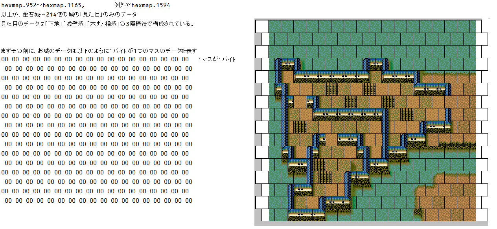
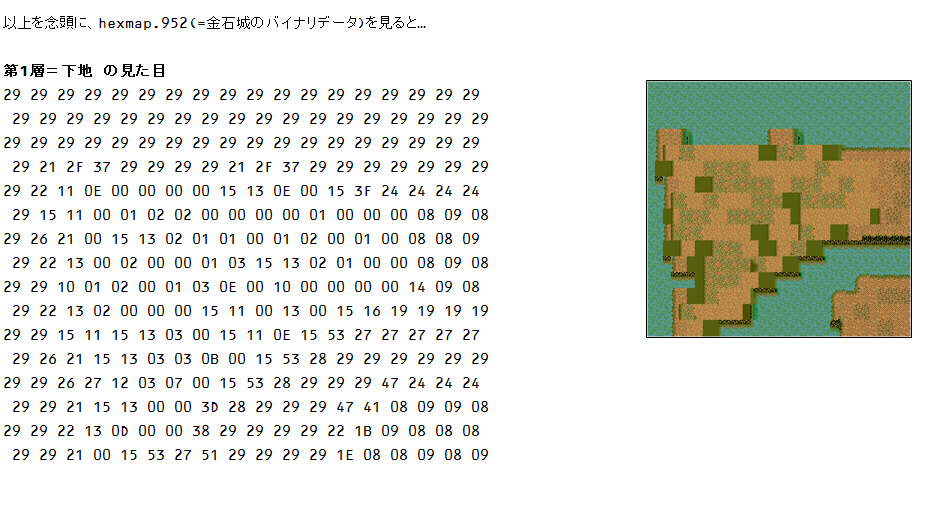
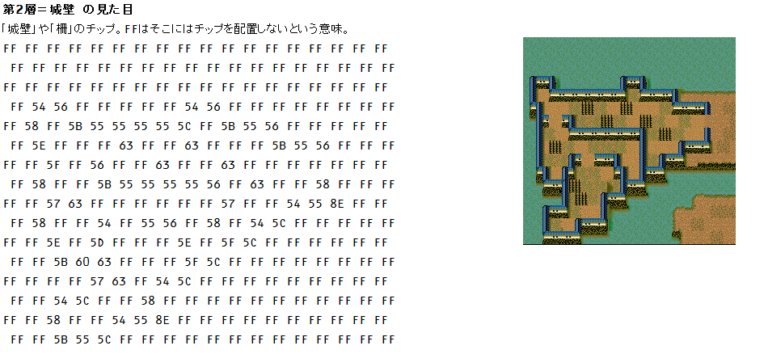
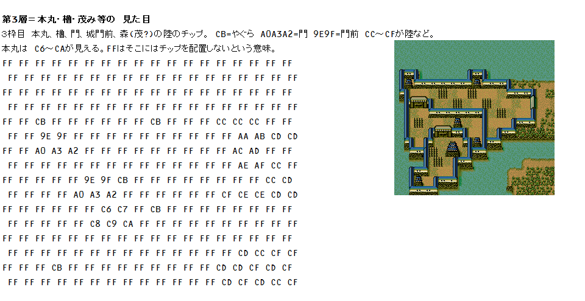
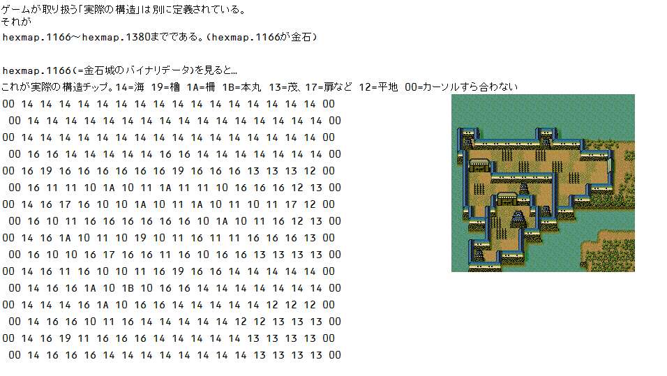
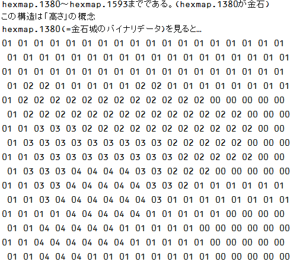

下記は、城内マップのデータ構造を理解するための説明となります。
このページはヘックスマップエディタが出来る前に
作成されたページとなります。
現在、城を編集する上で、このページに記載されているようなデータのバイナリ構造に対する深い理解は特に必要ではなく、
ヘックスエディタにて簡単に編集が可能となっています。
上記ダウンロードのExcelファイルは、便利に城を編集出来ようなツールではなく、
城の構造を理解する上でのファイルとなります。
城を考案したり、バイナリデータと比較する手作業用のファイルです。便利な機能は何もありません
たくさんのGifファイル。データ内バイト値に、ファイル名を合わせてグラチップとしています。
躑躅ヶ崎館のみ改変したhexmap.nb6。
元々の城内マップはこちら躑躅ヶ崎館を含む甲州城内地図一覧
城には、ＩＤが振られています。全部で214個の城が存在します。
実際には城名ではなく、城の場所に対してIDが振られているという感じです。
金石城が1番目の城となり、七尾城が2番、以下続いてゆきます。
これは、シナリオエディタの城の項目で調査可能ですので各自調べてください。
城内マップは｢hexmap.nb6｣の中に入っています。 この｢hexmap.nb6｣は、LS11 Archierによって解凍(Unpack)や圧縮(Pack)が可能です。 その構成は、以下のように３つに分けられます。「観音寺城＆大阪城」のデータが最後にまとまっています。
| ① | グラフィックチップの組み合わせデータ | hexmap.952～hexmap.1165 | hexmap.952 が金石城(=ID:1)で開始、hexmap.953が七尾城ということになり、全部で214個あります。 |
| ② | 実際何のオブジェクト(城・門・道・柵・水・平・荒・等）なのかのゲーム管理データ。 移動可不可、通路のパス検索などにも利用されます。 |
hexmap.1166～hexmap.1379 | hexmap.1166 が金石城(=ID:1)で開始、hexmap.1167が七尾城ということになり、全部で214個あります。 |
| ③ | 階層のデータ。(城内外の１階、２階などの概念です。下の階から上の階への移動には制限が伴いますので必要となります) | hexmap.1380～hexmap.1593 | hexmap.1380 が金石城(=ID:1)で開始、hexmap.1381が七尾城ということになり、全部で214個あります。 |
最後に1594～1596は、安土城 兼 大阪城のデータであり、それぞれ①②③に対応しています。




第１層～第３層までは、あくまで視覚的な｢見た目」の構成の話であり、
ゲーム内で取り扱う計算対象となる、いわゆる「役割」としての構造データは以下のようになります。

